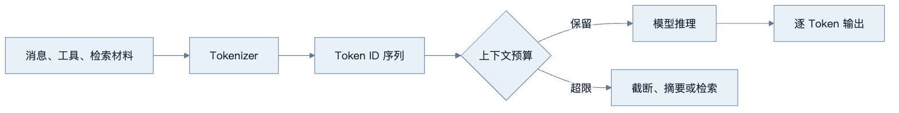
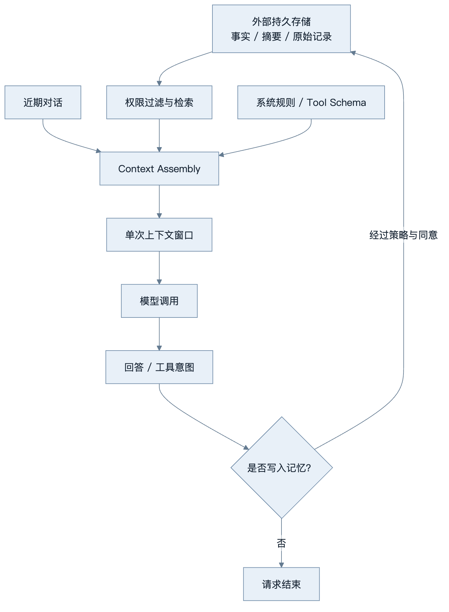
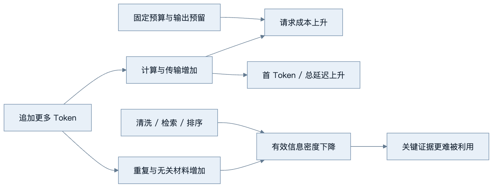
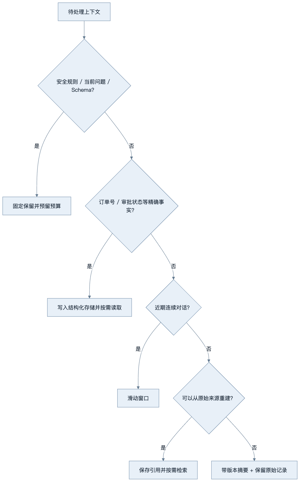
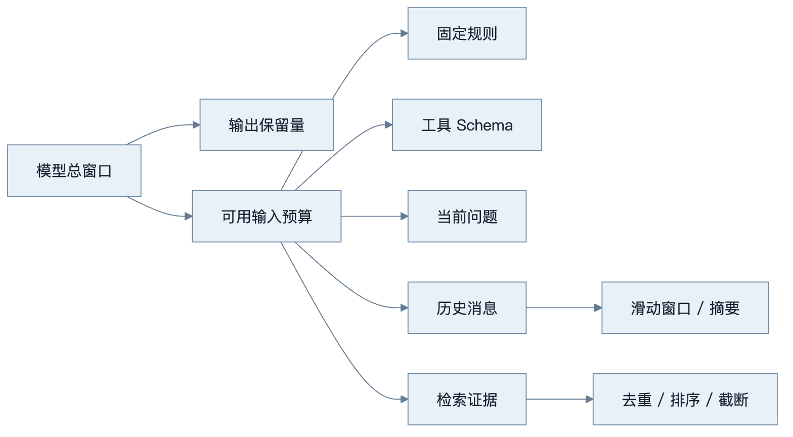
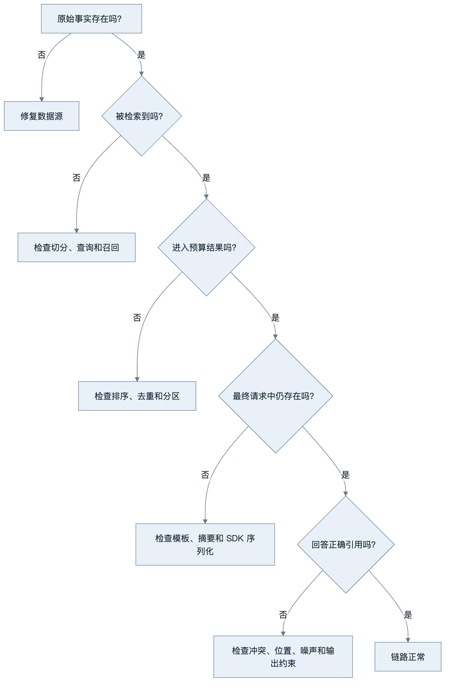

第2章：Token、Tokenizer 与上下文窗口
最后核对日期：2026-07-10。本章涉及具体模型窗口与价格时不提供静态数字，使用时应查官方文档。
章节导读与学习目标
模型看到的不是“字”或“单词”，而是 Token ID 序列。理解 Tokenizer 与上下文窗口，才能解释成本、延迟、截断和“模型忘了前文”等常见现象。学完后，你应能估算输入输出量，设计截断策略，并说明上下文为何不是长期记忆。
前置知识：第 1 章的自回归生成概念；Python 字符串与列表。
核心概念与原理
Tokenizer 将文本切分为词、子词、字符或字节相关单元，再映射为整数。不同模型使用不同词表和规则，因此同一段中文、英文、代码或 Emoji 的 Token 数可能不同。Token 不是稳定的自然语言单位，也不能用“汉字数”等比例精确换算；生产计费和截断必须调用目标模型对应的 Tokenizer 或供应商统计结果。
常见 Tokenizer 使用 BPE、WordPiece、Unigram 或其变体。它们依据训练语料和词表把字节或字符序列组合成可复用单元，而不是先理解句子再按人类词义切分。高频片段可能只占一个 Token，罕见姓名、长数字、混合编码和 Emoji 则可能拆成许多 Token。词表较大通常能缩短常见序列，却会增加模型输入输出层的规模；词表较小更灵活，但推理序列可能更长。Tokenizer 因此是数据分布、模型大小和运行成本之间的工程折中。
输入 Token 不只有聊天框里的文字，还包括系统指令、历史消息、角色标记、工具 JSON Schema、工具结果与检索材料。输出 Token 是模型自回归生成的序列。某些平台还区分缓存输入或其他计量项，其字段属于版本敏感能力，必须以当前官方说明为准。
一次请求的上下文通常由系统指令、历史消息、工具定义、工具结果、检索材料和当前问题共同占用。输出也占模型可处理的总预算。窗口变大可以容纳更多材料，却不保证模型同等有效地利用每个位置；噪声、冲突和关键证据埋藏会降低质量。

图中的预算控制必须由应用显式完成。简单删除最早消息可能丢掉系统约束；只保留摘要可能损失数字和引用。常用做法是固定保留系统指令与当前问题，对近期对话使用滑动窗口，对较早内容生成带版本的摘要，并从外部记忆按需检索。摘要是有损压缩，原始记录仍应在合规范围内保存。
上下文窗口与长期记忆经常被混为一谈。下图按生命周期区分单次调用工作区、会话状态、结构化事实和检索式记忆。

模型只看到组装后的窗口；是否写入、保存多久、谁能再次读取都由外部运行时决定。把整个聊天历史持续追加既不是可靠记忆，也会放大成本和注入风险。
成本、延迟与信息密度
更多 Token 通常意味着更多计算、传输和内存占用。长输入会增加预处理与首 Token 延迟，长输出会增加总响应时间。预算器应读取服务返回的实际 Usage，并监控“每个成功任务的 Token”；单次请求便宜但循环反复失败的 Agent，整体成本仍可能很高。
窗口更大不等于信息利用率更高。把整份手册直接塞进上下文，会把关键证据与目录、重复页眉和无关章节混在一起。更可靠的做法是清洗材料、按问题检索、按相关性和来源排序，并为安全规则与当前任务保留固定预算。
下图展示 Token 数量与三类工程指标的共同变化。它不是精确函数，而是提醒团队不能只看上下文上限而忽略首 Token 延迟、总成本和有效信息比例。

成本和延迟通常随 Token 增加，而质量并不单调上升。工程优化应先删除重复与低价值上下文，再考虑更大窗口或更昂贵模型。
截断、摘要与 Context Engineering
截断策略要区分不可丢失与可重建信息。系统安全规则、当前问题、工具权限和输出 Schema 不应被静默删除；寒暄、重复结果和可再次查询的数据可以压缩。滑动窗口适合局部连续任务，但会遗忘早期承诺；摘要保留主题，却可能改写数字和否定条件；检索式记忆可按需取回历史，却存在漏召回。关键订单号、审批状态等事实应进入结构化存储，而不是只存在生成摘要中。
Context Engineering 不只是改写 Prompt，而是决定模型在某次决策前实际看到什么：内容选择、角色、顺序、来源标记、冲突处理、压缩和预算都属于它。外部网页必须标记为不可信数据；当来源互相冲突时，系统应显式报告冲突或按确定规则选择，不能静默拼接后让模型猜测。
不同压缩策略会丢失不同信息。下图给出一个可执行的选择顺序：先保护不可丢失内容，再根据可重建性和连续性选择窗口、摘要或检索。

树中的优先级避免安全规则和精确业务事实被摘要改写。摘要与检索都需要原始来源和版本，不能把生成文本当作唯一证据。
最小实验
在没有目标 Tokenizer 时，只能做字符级演示，不能把结果称为模型 Token 数：
from collections import Counter
text = "Agent 不等于 LLM。"
print(len(text), Counter(text))
正式实验应选择一个明确模型，分别统计同义中英文、JSON、代码和 Emoji，记录输入 Token、输出 Token、首 Token 延迟和总延迟，再观察它们与内容长度的关系。
完整工程示例：上下文预算器
预算器应接收目标 Tokenizer 的计数函数，从而把供应商适配与保留策略分离：
from collections.abc import Callable
from dataclasses import dataclass
@dataclass(frozen=True)
class Message:
role: str
content: str
pinned: bool = False
def select_messages(
messages: list[Message], count_tokens: Callable[[str], int], budget: int
) -> list[Message]:
if budget <= 0:
raise ValueError("budget 必须为正数")
selected = [message for message in messages if message.pinned]
used = sum(count_tokens(message.content) for message in selected)
if used > budget:
raise ValueError("固定消息已经超过上下文预算")
for message in reversed([item for item in messages if not item.pinned]):
cost = count_tokens(message.content)
if used + cost <= budget:
selected.append(message)
used += cost
return sorted(selected, key=messages.index)
这个实现只选择完整消息，不会把一条消息从中间截断。真实系统还应为工具 Schema 和最大输出预留空间；固定内容超限时应停止请求并报警。测试至少覆盖预算恰好用满、固定消息超限、单条消息过长和不同语言计数差异。
工程案例
考虑一个企业知识库助手。模型上下文上限并不能全部交给检索结果，因为一次调用还必须容纳系统策略、用户问题、对话历史、工具定义，以及尚未生成的答案。若应用只在发送前检查输入长度，就可能出现输入合法、生成到一半却触及总窗口限制的情况。工程上的上下文预算应先做分区，再在每个分区内部选择材料。

分区不是要求每类内容永远占固定比例，而是给系统建立明确的优先级与拒绝条件。固定规则、当前问题和输出保留量属于硬约束；历史与证据通常属于弹性区域。工具 Schema 也不应被忽略：当 Agent 注册几十个工具时，定义本身可能成为最大的输入项。更好的做法是先路由到一个小工具集合，再把相关 Schema 放入调用。
下面的预算器演示硬预算检查。为便于离线运行，示例把 Token 计数函数作为依赖注入；测试时可以使用确定性的近似计数器，生产中则替换为目标模型的 Tokenizer。近似值只能用于流程测试，不能用于计费或临界窗口判断。
from collections.abc import Callable
from dataclasses import dataclass
class ContextBudgetExceeded(ValueError):
"""固定上下文和输出保留量已经使请求不可执行。"""
@dataclass(frozen=True)
class ContextRequest:
instructions: str
history: tuple[str, ...]
retrieved_chunks: tuple[str, ...]
tool_schema: str
user_query: str
reserved_output_tokens: int
@dataclass(frozen=True)
class ContextPlan:
fixed_tokens: int
history: tuple[str, ...]
evidence: tuple[str, ...]
input_tokens: int
reserved_output_tokens: int
def build_context_plan(
request: ContextRequest,
*,
model_window: int,
count_tokens: Callable[[str], int],
) -> ContextPlan:
if model_window <= 0 or request.reserved_output_tokens <= 0:
raise ValueError("窗口与输出保留量必须为正数")
fixed_parts = (
request.instructions,
request.tool_schema,
request.user_query,
)
fixed_tokens = sum(count_tokens(part) for part in fixed_parts)
input_limit = model_window - request.reserved_output_tokens
if input_limit <= 0 or fixed_tokens > input_limit:
raise ContextBudgetExceeded(
"固定指令、工具、问题与输出保留量超过模型窗口"
)
remaining = input_limit - fixed_tokens
selected_history: list[str] = []
# 最近消息优先，但最后恢复为时间顺序。
for message in reversed(request.history):
cost = count_tokens(message)
if cost <= remaining:
selected_history.append(message)
remaining -= cost
selected_history.reverse()
selected_evidence: list[str] = []
# 检索器应已按相关性排序，因此从前向后选择。
for chunk in request.retrieved_chunks:
cost = count_tokens(chunk)
if cost <= remaining:
selected_evidence.append(chunk)
remaining -= cost
used = input_limit - remaining
return ContextPlan(
fixed_tokens=fixed_tokens,
history=tuple(selected_history),
evidence=tuple(selected_evidence),
input_tokens=used,
reserved_output_tokens=request.reserved_output_tokens,
)
这个实现有意选择“固定项超限就拒绝”，而不是偷偷截短系统指令或输出 Schema。调用方收到 ContextBudgetExceeded 后，可以减少工具集合、要求用户缩小问题范围，或选择经过验证的大窗口模型。静默删减硬约束会使请求表面成功，却改变安全边界，这比显式失败更危险。
验收测试应证明：固定指令、历史、检索材料与输出保留量之和超过窗口时，预算器不会把不完整请求发给模型；当只有弹性内容超限时，保留近期历史和高排序证据。以下测试不依赖付费 API：
import pytest
def words(text: str) -> int:
return len(text.split())
def test_rejects_when_fixed_context_and_output_exceed_window() -> None:
request = ContextRequest(
instructions="never reveal secrets",
history=(),
retrieved_chunks=(),
tool_schema="tool read only",
user_query="summarize the incident",
reserved_output_tokens=5,
)
with pytest.raises(ContextBudgetExceeded):
build_context_plan(request, model_window=10, count_tokens=words)
def test_keeps_recent_history_and_ranked_evidence_within_budget() -> None:
request = ContextRequest(
instructions="follow policy",
history=("old low value message", "recent message"),
retrieved_chunks=("best evidence", "secondary evidence"),
tool_schema="read tool",
user_query="answer now",
reserved_output_tokens=4,
)
plan = build_context_plan(request, model_window=16, count_tokens=words)
assert plan.history == ("recent message",)
assert plan.evidence == ("best evidence",)
assert plan.input_tokens + plan.reserved_output_tokens <= 16
生产实现还要把消息封装开销计算进去。聊天协议通常会为角色、边界和工具调用增加额外 Token，仅对 content 字段计数可能低估输入。最可靠的顺序是：用 SDK 或官方 Tokenizer 对最终序列预估，保留安全余量，发送后再用响应 Usage 校正监控数据。若服务端统计与本地统计持续偏离，应升级 Tokenizer 适配，而不是放大一个经验系数掩盖问题。
观测与容量规划
预算器的 Trace 不应只记录一个总数。建议至少记录 model、Tokenizer 版本、各分区 Token 数、被删除的消息数、被删除的证据数、压缩策略版本、输出保留量和服务端实际 Usage。指标可以聚合，但正文通常含有个人信息或商业秘密，日志中应保存哈希、文档 ID 或脱敏片段。
容量规划应关注分位数，而不是只看平均值。平均请求可能很短，但 P95 的长对话与大工具结果会决定超限率和尾延迟。团队可以建立“每个成功任务的输入 Token”“每个成功任务的输出 Token”“压缩触发率”“固定区超限率”和“因上下文不足重试次数”等指标。若压缩触发率长期接近 100%，通常说明默认预算或工作流拆分需要调整。
失败分析与调试
“模型忘了”不是一个足够精确的故障描述。应沿上下文装配链路定位内容在哪一步丢失或失效：

常见失败可以按可观测证据区分：
| 现象 | 常见原因 | 应检查的证据 | 处理原则 |
|---|---|---|---|
| 安全约束偶发消失 | 固定消息被普通截断策略删除 | 最终消息数组与角色顺序 | 固定区超限即拒绝 |
| 引用编号存在但内容不相关 | 召回或排序失败 | 候选列表、分数和文档版本 | 先修检索，不靠 Prompt 掩盖 |
| 长对话早期承诺丢失 | 滑动窗口淘汰历史 | 被删消息 ID 与摘要版本 | 精确事实写结构化存储 |
| 输出生成到一半停止 | 未预留输出或工具结果膨胀 | finish reason、Usage、工具结果大小 | 输出硬预留，限制工具返回 |
| 本地估算未超限但服务拒绝 | Tokenizer 或封装开销不一致 | 本地版本与服务端 Usage | 使用匹配版本并留安全余量 |
| 摘要与原文冲突 | 有损压缩改写数字或否定词 | 摘要来源、生成时间、原文引用 | 摘要不作为精确事实唯一来源 |
调试时应能够重放“最终送入模型的逻辑上下文”，但重放数据必须受访问控制。不要在普通应用日志中打印全部提示词，也不要把外部网页内容当作可信指令。检索材料即使进入了高优先级位置，仍应以清楚的边界标为不可信数据，避免 Indirect Prompt Injection 越过工具权限。
替代方案与使用边界
滑动窗口适合目标持续、主要依赖近期消息的会话；它不适合保存几周前作出的合规承诺。摘要适合压缩叙事性历史；它不适合独占保存精确金额、身份、审批状态或来源证据。检索式上下文适合大量可索引资料；若问题需要完整比较所有条款而召回可能漏项，应先做确定性筛选或批处理。把任务拆成多个步骤可降低单次窗口压力，但会增加状态管理、延迟和错误传播，需要 Checkpoint 和幂等设计配合。
选择更大窗口是可用方案，但不应成为第一反应。只有在内容确实不可压缩、不可分解，且质量实验表明大窗口改善超过成本和延迟代价时，才应升级。反之，去除重复工具结果、减少无关 Schema、按权限检索和提高证据密度通常更直接。
工程实践、误区与安全
上下文工程不是无限追加材料，而是选择、排序、压缩并标注来源。把不可信网页放入上下文还会引入间接 Prompt Injection；检索内容必须与系统指令隔离，并声明其只是数据。日志记录 Token 用量时要脱敏，不能为了成本分析保存完整个人对话。
常见误区包括：把窗口当数据库容量、认为窗口未满就不会遗忘、用字符数精确估价、摘要后删除唯一原始证据。调试时应打印每类上下文的 Token 占比，构造接近窗口上限的测试，并验证关键约束在压缩前后仍存在。
当模型“忘记”时，先确认最终请求是否真的包含相关内容、角色与顺序是否正确、是否被中间件摘要、工具结果是否挤占预算，以及证据是否被噪声淹没。Trace 可以记录每段上下文的来源、Token 数和截断原因，但敏感正文应脱敏或只记录引用 ID。
总结、练习与延伸
Token 是模型计算单位，上下文是单次调用的工作区，不是持久记忆。窗口管理同时影响质量、成本、延迟和安全。
课后练习：为 50 轮客服对话设计“固定指令 + 近期窗口 + 事实摘要 + 外部检索”策略；实现预算器单元测试；比较同义中英文、JSON 与代码的 Token 数，并解释客户订单号为什么不能只存在生成摘要中。
面试问题：上下文窗口翻倍为什么不一定使长文问答质量翻倍？滑动窗口和检索式记忆分别会丢失什么？
延伸阅读：目标模型官方 Tokenizer 文档；Sennrich et al., Neural Machine Translation of Rare Words with Subword Units；Liu et al., Lost in the Middle。本章代码目录为 examples/token_counter/，已提供独立 Python 3.12 工程、离线 Fixture、预算拒绝测试与预期输出；Fixture 计数仍不得用于真实模型计费。
练习参考答案
- 对 50 轮客服对话，可以固定保留系统政策、当前问题和输出预算；近期若干轮使用滑动窗口；订单号、退款状态与审批结论写入带来源和更新时间的结构化字段；较早叙事生成可追溯摘要；历史附件按用户权限检索。这样做的关键不是某个固定轮数，而是不同信息采用不同保真策略。
- 预算器测试至少覆盖零或负预算、固定区恰好占满、固定区超限、单条弹性消息过长、输出保留量大于窗口、近期消息优先、高排序证据优先，以及计数器抛出异常。若接入真实模型，还要比较本地预估和服务端 Usage。
- 同义中英文、JSON 和代码必须用同一目标 Tokenizer 实测。不能从字符数直接推出 Token 数，因为词表对常见片段、空格、标点、转义符与不同文字系统的编码不同。报告中应写明模型、Tokenizer 版本和测试日期。
- 客户订单号不能只存在生成摘要中，因为摘要可能遗漏字符、合并多个订单或在冲突时选择错误版本。订单号应存入结构化记录，摘要只保存面向会话的说明，并携带记录 ID 以便重新核验。
本章引用
以下资料用于支撑本章的核心原理、工程边界与版本敏感说明：